Exploring changing landscapes
with dynamic visualizations and
tangible interaction
Helena Mitasova


A. Petrasova, V. Petras, B. Harmon, P. Tabrizian, J. Jeziorska

Modern 3D mapping technologies
- from 2D images to 3D digital models
- Lidar technology transformed topography mapping in 21st century
- UAS and SfM made 3D mapping accessible to everybody and any time
- Beyond bare earth
- 3D data are now ubiquitous so we need easy to use tools to work with them: TL
Case studies tour and TL examples
- NC coast: Jockey's Ridge - integration of 3D data acquired by evolving 3D mapping technologies, active, fast moving dune system within state park, multitemporal 3D data analysis and dynamic visualizations
- NC coast: Nags Head, Rodanthe or Oregon Inlet - fast extraction of structures history, shoreline envelope etc.
- Hurricane impacts: students work - bridge flooding from lidar, rapid refining ADCIRC flooding extent predictions
- Surface runoff: streel level modeling
- Surface runoff: microtopography
- Vegetation: geomorphons and 3D fragmentation index
- what is TL and how it works
North Carolina lidar surveys
- Coastal surveys started in 1996, multiple agencies, USGS, NASA, USACE, no systematic mapping - project driven or post hurricanes, capture dynamics of dunes, shorelines, vegetation and development
- Statewide survey: first in US 2001-2005, second survey 2015-2018? funded by FEMA for flood insurance mapping, applications were much broader (e.g. statewide map of canopy height, etc.)
Jockey's Ridge sand dunes
Where is JR, state parkJockey's Ridge DEM time series
DEMs interpolated at 1m resolution from diverse point data acquired by
- photogrammetry (1974-98),
- lidar (1999-2015),
- structure from motion from UAS imagery (2016-2017)
GRASS GIS temporal framework for managing and analysis of the time series
 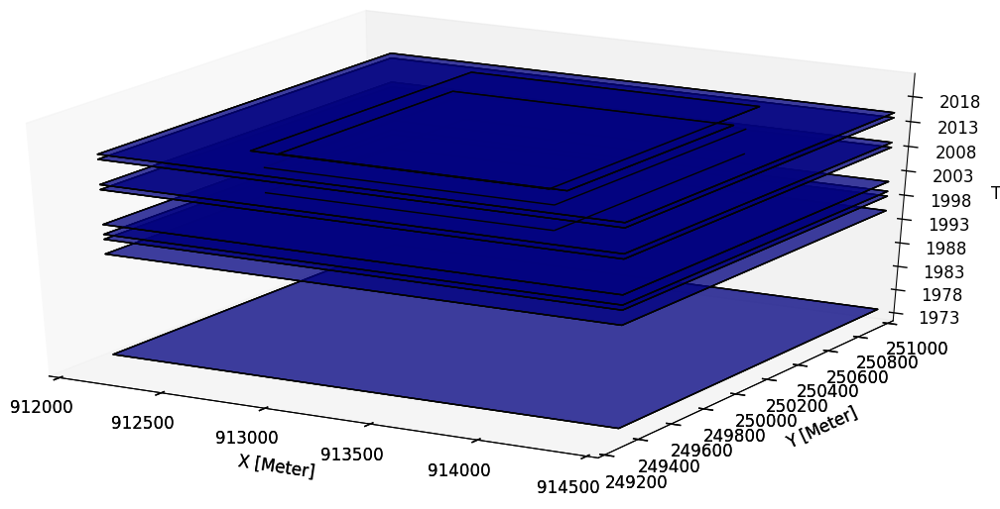
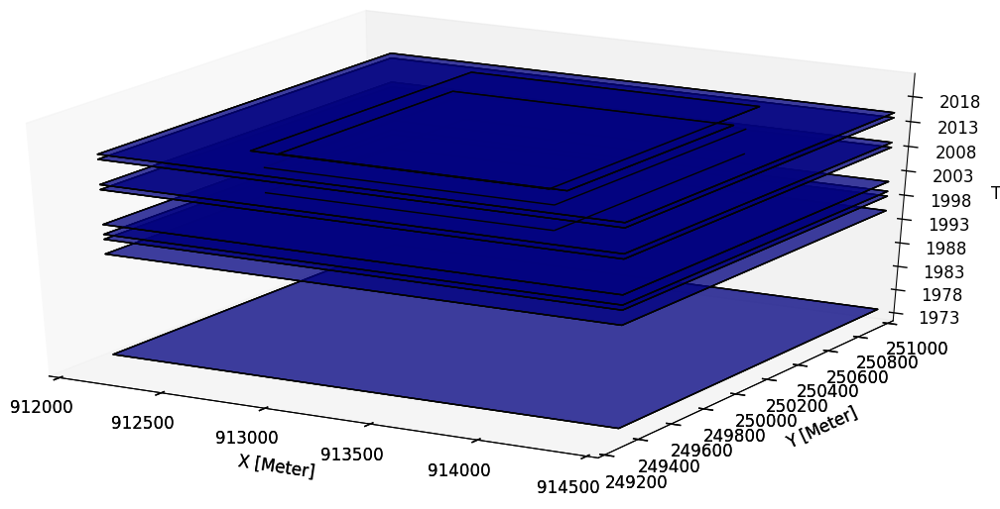
Gebbert, S., Pebesma, E., 2014. A temporal GIS for field based environmental modeling. Environmental Modelling and Software 53, 1-12.
Exploring DEMs time series
Complex pattern of changes - loss and increase in elevation
add map with location of queried points, difference 1974 - 2015 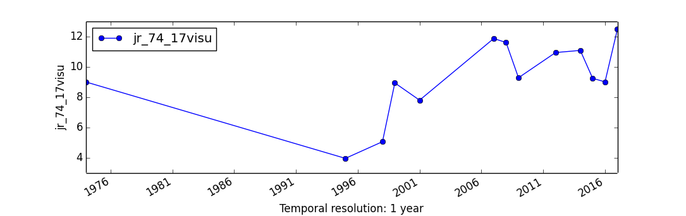 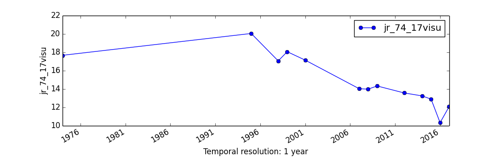
DEM time series visualization
Jockey's Ridge 1974 - 2017: southward migration, landform transformation
from crescentic dune to sand starved, fast moving parabolic dune

DEM time series visualization 1974 - 2017
Peak elevation and horizontal migration
- linear trend in loss of peak elevation at 0.3m per year, from 43m to 20m
- accelerating horizontal migration from 3m/yr to 6m/yr
- management challenges: dynamic feature confined to static park boundaries

add horizontal migration graph or image of JR within boundaries in 74 and now
Volume and vegetation
- vegetation increased, but dune still kills trees on the leeward side
- total sand volume is stable, but the core (sand that has not moved) is shrinking
 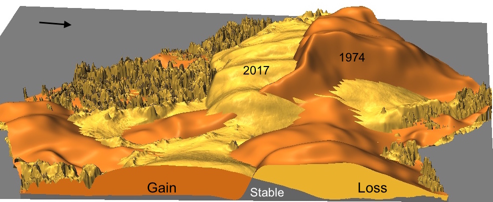
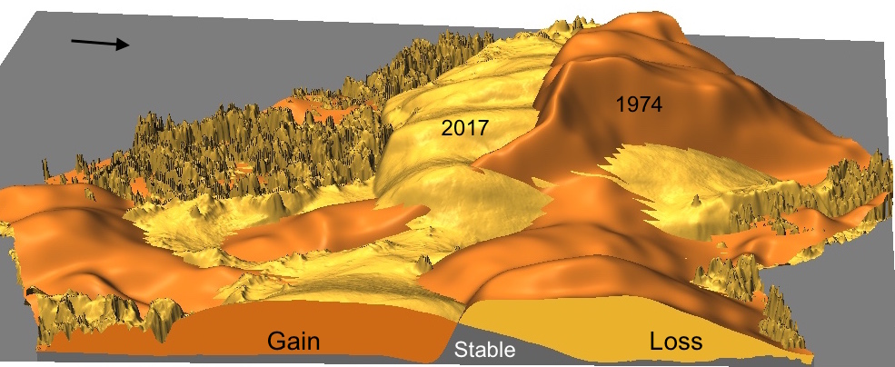
add vegetation gain/loss map, Katies vegetation evolution map?
Contours time series
Contours capture the landform change but they are hard to read 16m
16m
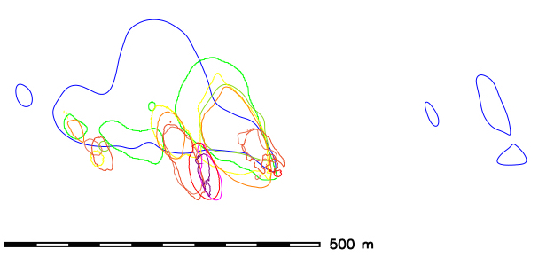 20m
Space-Time cube visualization
DEM time series is converted into space-time voxel model in TGRASS and evolution of a contour is represented as isosurface: 16m and 20m


Jockey's Ridge story
The 43 m high dune was a transient landform,
transitioned between forest and active dunes over the past 2000 years
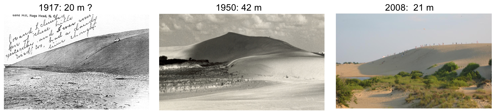


Dune in early 1900 and in 2008, 2016
Beaches, shorelines and development
NH or Rodanthe
r.series analysis, core and envelope, shoreline migration band, home lost and constructedNH or Rodanthe
maybe Eric's dune ridge line, check Doug's workshop on geomorphonsFrom observations to modeling of processes
Surface water flow, storm surge
Land surface controls water flow across landscapes
Critical processes and impacts: surface runoff, flooding, storm surge
 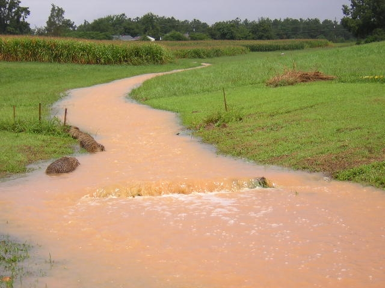
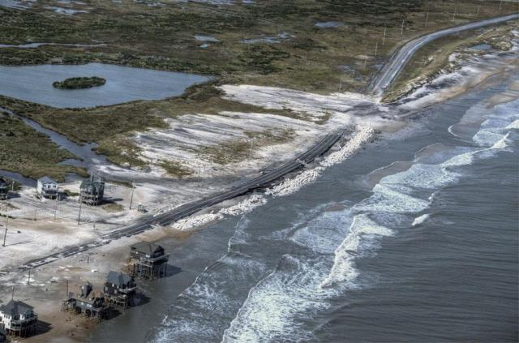
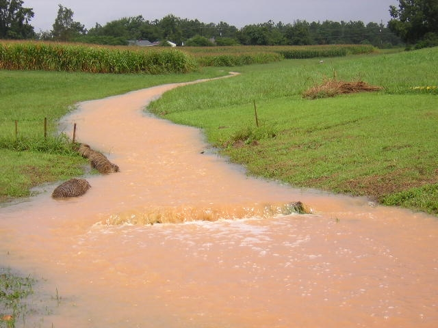
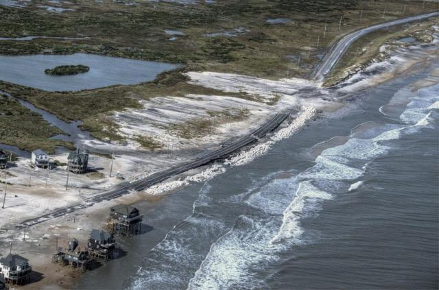
Challenges of modeling water at high resolution
Complex, noisy surfaces, capture real depressionsPath sampling of continuous fields
robust solution of shallow water flow equations and process-based sediment transport


Solver based on duality of particles and fields works for noisy surfaces, captures ponding in depressions
Neighborhood DEM
2013 lidar-based DEM - add images


High resolution water flow
Street level modeling of surface runoff using path sampling method
storm drains and stormwater pipes are in the map, only surface water flow is shown, izy model is coupled with SWM, but harder to run
High resolution water flow
add animation with culvert free and clogged
storm drains and stormwater pipes are in the map, only surface water flow is shown, izy model is coupled with SWM, but harder to run
Ultra-high resolution water flow: UAS mapping
Modeling impact of tillage and rills on surface water flow using 0.2m DEM derived by SfM based on UAS imagery

Modeling flooding extent
Students are making an impact
Project-based graduate courses since 2008
Integration of open source GIS in courses
Onset of bridge flooding
William Ross for NC disaster management
Bridges are cut out in lidar DEM to facilitate water routing, bridge deck polygon data were used to restore/add bridges to lidar DEM
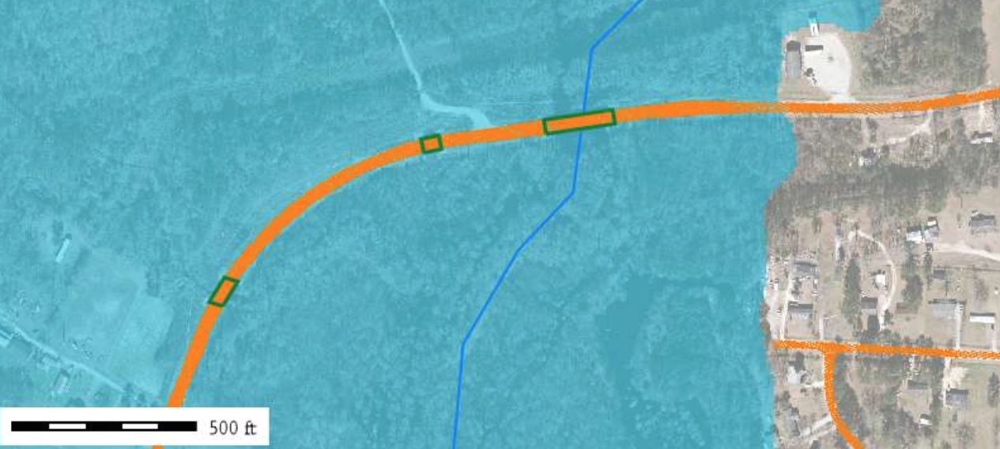
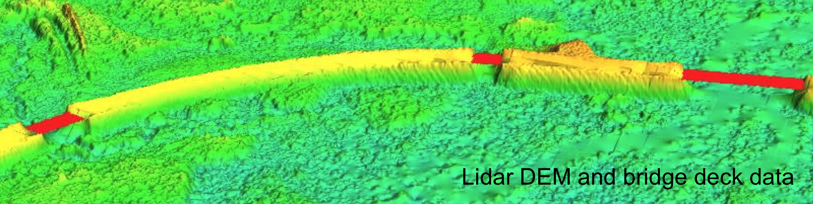
Onset of bridge flooding
William Ross for NC disaster management
Flood level was modeled using floodplain mapping data for 10, 100, 500 year storm
 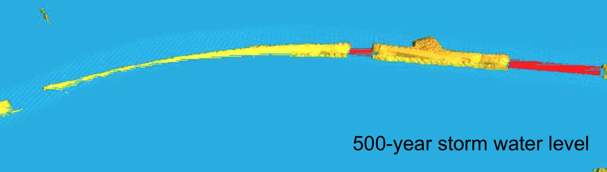
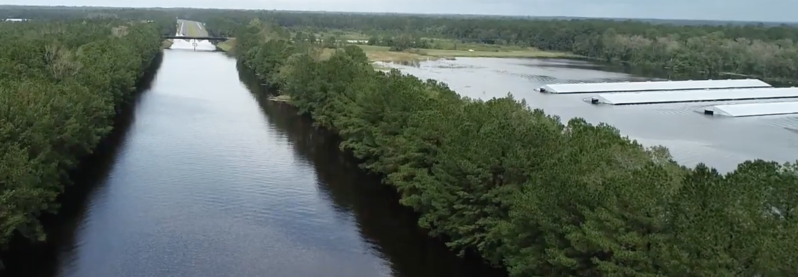
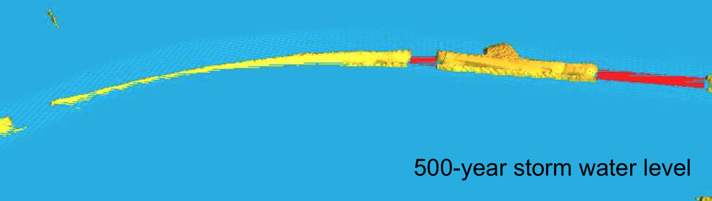
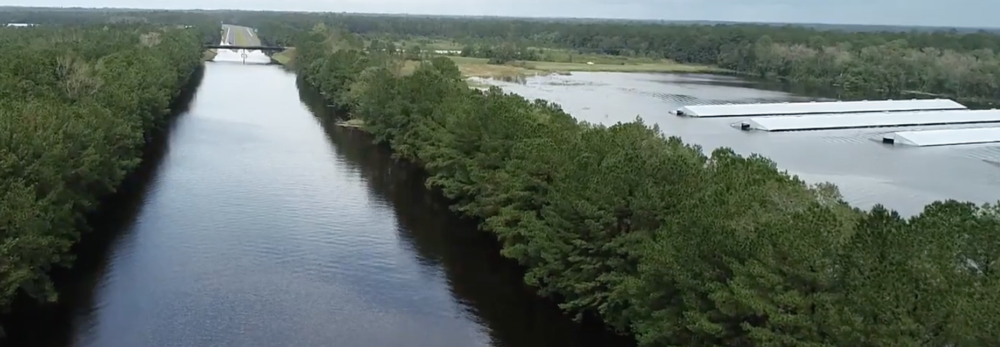
County map of flooded bridges
William Ross for NC disaster management
Flooded bridges mapped based on lidar, bridge and inundation data for 100 yr storm
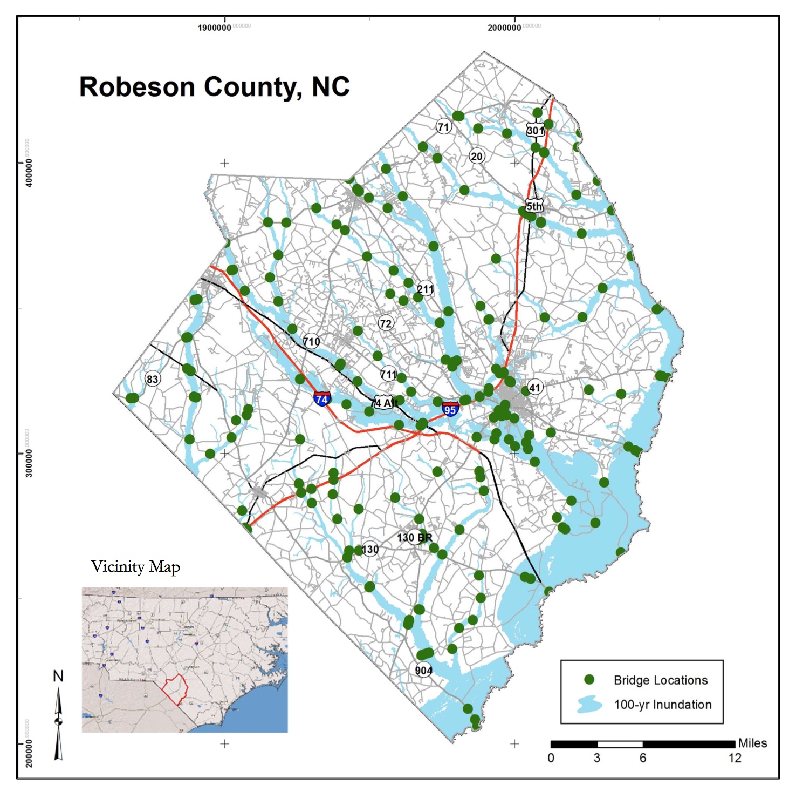
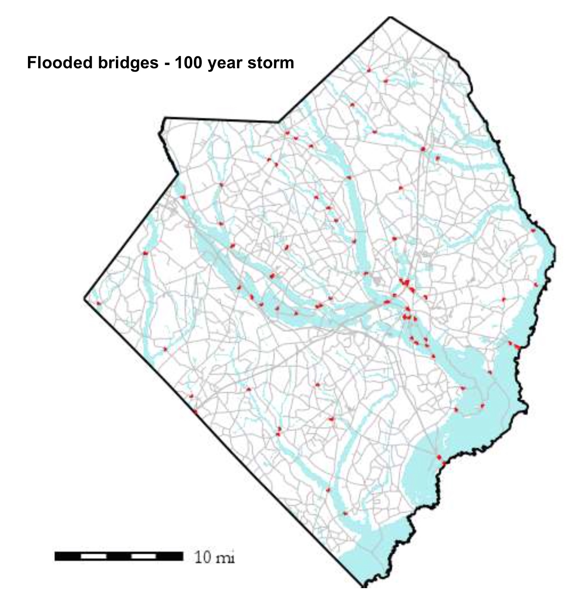
Drones for floodwater depth
William Ross for NC disaster management
2016 mathews - use of drones was exploratory
2018 Frances - drones in full service
Coastal flooding
High resolution modeling is important 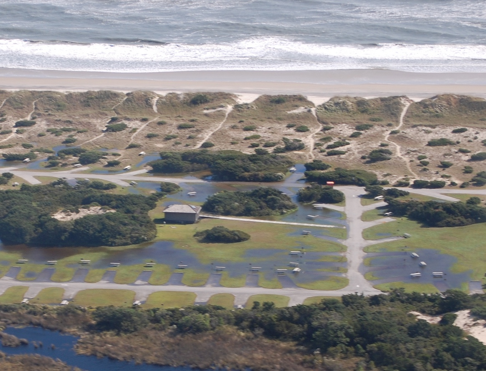
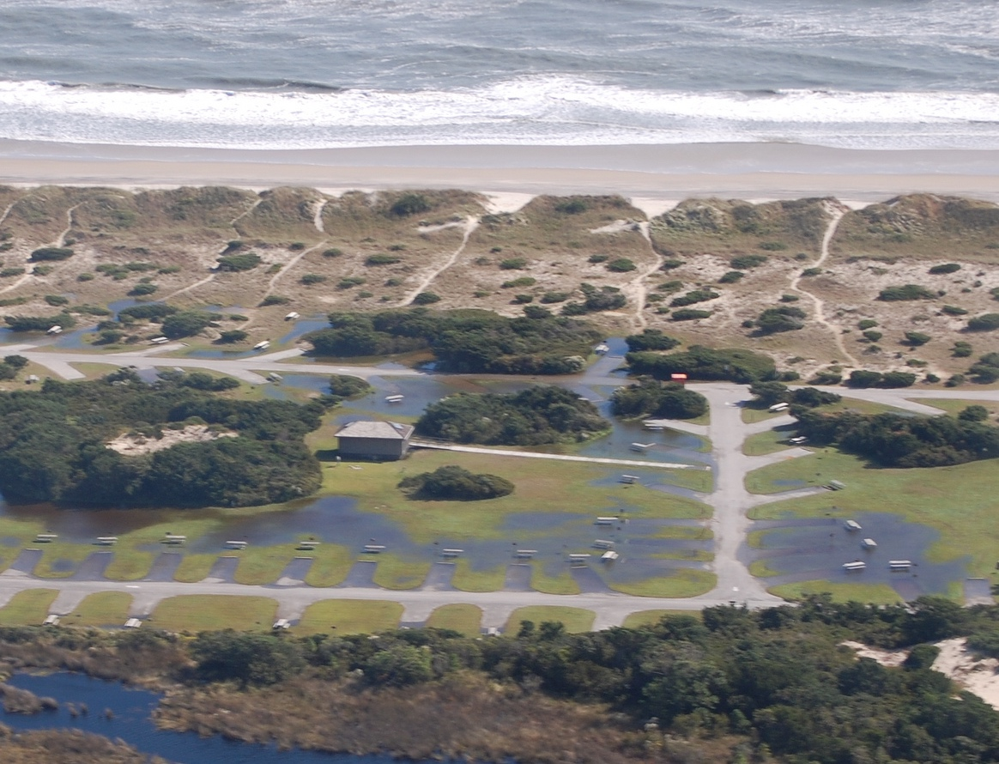
Improving storm surge flooding predictions
Nelson Tull for operational storm surge prediction using ADCIRC
Hurricane Matthew Hindcast - number of buildings flooded: before enhancement: 2435;
after: 3886, a 60 percent increase.

N. Tull, J.C. Dietrich, T.E. Langan, H. Mitasova, B.O. Blanton, J.G. Fleming, R.A. Luettich 2018, Improving Accuracy of Real-Time Storm Surge Inundation Predictions Using GRASS GIS, Poster at ASBPA conference, October 2017. (American Shore and Beach Preservation Association)
Beyond bare earth surface
Individual tree detection from lidar
Geomorphons (Jasiewicz, Stepinski 2013) applied to vegetation surface: peaks represent individual trees. Detected trees are replaced by modeled trunks to improve accuracy of viewscape analysis (Tabrizian et al. 2018)

Individual tree detection from lidar
to improve accuracy of viewscape analysis (Tabrizian et al. 2018)
Vegetation voxel models
Generalized Fragmentation Index derived from 3D grid point counts: vertical slice of raw point cloud and slice of fragmentation index 3D raster

Vegetation voxel models
Slicing through fragmentation index 3D raster
 Petras, V., D. J. Newcomb, and H. Mitasova. 2017. Generalized 3D fragmentation index derived from lidar point clouds. In: Open Geospatial Data, Software and Standards 2(9). DOI 10.1186/s40965-017-0021-8
Petras, V., D. J. Newcomb, and H. Mitasova. 2017. Generalized 3D fragmentation index derived from lidar point clouds. In: Open Geospatial Data, Software and Standards 2(9). DOI 10.1186/s40965-017-0021-8
Urban topography
Solar irradiation during summer solstice at NCSU Centennial Campus

Urban topography: UAS updates
2015 lidar updated with 2018 UAS data: forested are replaced by a new school

Tangible interface for surface analysis and process modeling
Tangible Landscape
Bringing people together around GIS: Tangible user interface for GRASS GIS
Designed to make working with geospatial data and simulations engaging, and fun

Petrasova, A. et al. (2018). Tangible Modeling with Open Source GIS. Second edition. Springer International Publishing. https://doi.org/10.1007/978-3-319-89303-7
How does it work?

Tangible Landscape couples a digital and a physical model through a continuous cycle of 3D scanning, geospatial modeling, and projection
Interactions

Coupling with 3D rendering

Design scenario analysis

Tangible Landscape for designers and researchers


Tangible Landscape for education

Tangible Landscape for communities
Platform for decision-making and science communication where people of different backgrounds can interact.

Tangible Landscape website:
tangible-landscape.github.io
TL wiki: github.com/tangible-landscape/grass-tangible-landscape/wiki
Open Science
Developing open source software and contributing to OSGeo projects:
GRASS GIS https://grass.osgeo.org/
Tangible Landscape tangible-landscape.github.io
Open access educational material:
NCSU GeoForAll Lab Courses and Workshops https://geospatial.ncsu.edu/geoforall/courses.html

Thank You!
Thank you all for your contributions to the field - data, methods, algorithms and tools, that helped to bring the discipline to its current thriving state